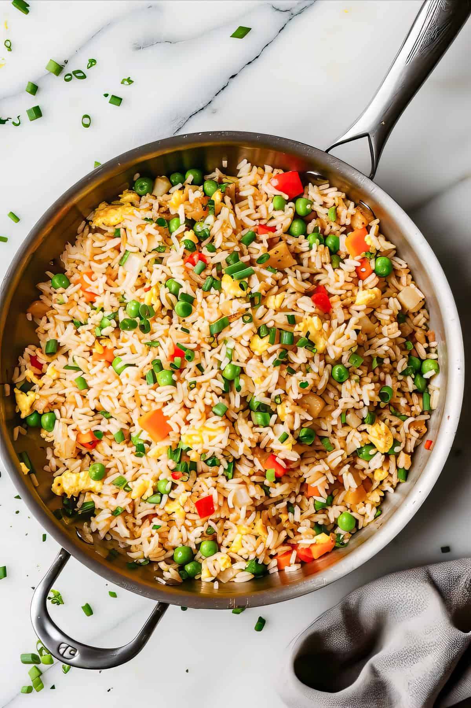

Fried rice is a dish of cooked rice that has been stir-fried in a wok or a frying pan and is usually mixed with other ingredients such as eggs, vegetables, seafood, or meat. It is often eaten by itself or as an accompaniment to another dish.
Ingredients
1 cup water
2 tbsp Soy Sauce
1/2 tsp Salt
1 cup Day-old Rice
1 tsp Vegetable Oil
1/2 Onion, finely chopped
1/2 cup sliced Green Beans or Peas
1 Egg, lightly beaten
1/4 tsp Ground Black Pepper
Steps
Bring water, soy sauce, and salt to a boil in a medium saucepan. Stir in instant rice and remove from heat. Cover and let stand for 5 minutes.